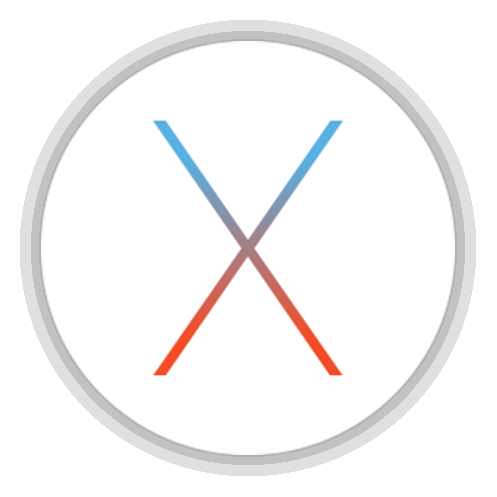

OS X
|  |
OS X (dawniej Mac OS X) – rodzina uniksowych systemów operacyjnych produkowanych i rozprowadzanych przez Apple Inc. dostępnych (oficjalnie) jedynie dla komputerów Macintosh, instalowany fabrycznie w nich od 2002 roku.
OS X, gdzie X jest rzymską cyfrą 10 i rozpoznawalnym znakiem widniejącym na logach, opakowaniach pudełek z systemem itp., jest zbudowany na podstawie dawnego systemu NeXTStep z drugiej połowy lat 80., wykupionym przez Apple wraz z producentem tegoż systemu NeXT w 1996 r. Jest on następcą systemu Mac OS 9, wydanego w 1999 r. i ostatniej wersji "klasycznego" Mac OS, który był głównym systemem komputerów Macintosh od 1994 roku.
OS X oryginalnie działał jedynie na Macach o architekturze PowerPC. W 2006 wydano pierwszą wersję dla nowych Maców o architekturze x86 - 10.4 Tiger. W 2005 roku wydano pierwszą wersję w pełni zgodną z Single UNIX Specification w wersji trzeciej - 10.5 Leopard, działający zarówno na Macach PowerPC i x86 z pomocą technologii zwanej Universal binary, czyli formatu plików wykonywalnych działających na obu architekturach. 10.6 Snow Leopard to ostatnia wersja, która obsługuje programy dla procesorów PowerPC przy użyciu narzędzia Rosetta. 10.7 Lion przestaje również obsługiwać komputery o architekturze 32-bitowej, ograniczając się do procesorów 64-bitowych.
Pierwszą publicznie opublikowaną wersją systemu był Mac OS X Server 1.0 z 1999 roku i Cheetah (wersja desktopowa) wydany 24 marca 2001 roku. Poszczególne wydania nazywane są od wielkich kotów, np. Mac OS X 10.7 nosi nazwę handlową Lion, czyli lew. Wersja serwerowa, OS X Server technicznie nie różniła się wiele od OS X - posiadała jedynie wiele wbudowanych aplikacji serwerowych. Obecnie, czyli od wersji Lion nie ma już możliwości zakupu OS X Server osobno - jest on dostępny jako pakiet aplikacji do OS X a także ładowany do wersji serwerowych Maców Mini oraz Pro.
iOS - system firmy Apple działający na urządzeniach przenośnych iPhone, iPod Touch, iPad oraz Apple TV drugiej i trzeciej generacji został stworzony w oparciu o OS X, z którym to dzieli jądro Darwin i wiele mechanizmów działania, jednak aplikacje dla OS X są tworzone za pomocą Cocoa, a dla iOS za pomocą Cocoa Touch dostosowanego do ekranów dotykowych.
Spis treści:
- 1. Historia systemu
- 2. O systemie
- 3. Kompatybilność
- 4. Cechy systemu
- 5. Języki
- 6. Wersje systemu
- 7. Linki zewnętrzne
Historia systemu
OS X powstał w oparciu o jądro Mach. Niektóre części z implementacji Unixa: FreeBSD i NetBSD zostały włączone w NextStep, który był obiektowo zorientowanym systemem opracowanym przez firmę Steve'a Jobsa - NeXT, która została założona po jego odejściu z Apple w 1985. Podczas nieobecności Jobsa w Apple, próbowano stworzyć system nowej generacji, czego efektami były projekty tj. Taligent, Copland i Gershwin, jednak wszystkie szybko upadły.
W końcu system operacyjny firmy NeXT, później nazywany OpenStep, został wybrany jako podstawa do stworzenia nowego systemu Apple. Apple w tym celu wykupiło firmę NeXT. Steve Jobs powrócił do firmy z Cupertino i stał się tymczasowym, a później głównym dyrektorem generalnym, kierując zmianami w kierunku przekształcenia przyjaznego dla programistów OpenStep w system, który mógłby być wykorzystany przez Apple dla rynku domowego i twórczych profesjonalistów (np. grafików komputerowych). Projekt na początku nazywał się Rhapsody i został później przemianowany na Mac OS X.
Pierwsza edycja Mac OS X Server była niekompatybilna z oprogramowaniem napisanym dla Mac OS i nie posiadała wsparcia dla standardu Apple'a - interfejsu FireWire. Następne wersje posiadały już większą wsteczną kompatybilność i funkcjonalność, zawierając API Carbon i wsparcie dla FireWire. Podczas rozwoju systemu stopniowo oddalano się od spuścizny po Mac OS-ie i kierowano się w stronę nowego "cyfrowego stylu życia" wydając takie programy jak iLife, iWork czy zintegrowany z systemem program służący do domowej rozrywki Front Row. Każda nowa wersja zawiera również modyfikacje ogólnego interfejsu, jak styl "szlifowanego metalu", który został dodany w wersji 10.3 i usunięty w 10.5 na rzecz jednolitego gradientowego wyglądu okien.
O systemie
OS X jest dziesiątą główną wersją systemu operacyjnego Mac OS dla komputerów Macintosh. Poprzednie wersje nazwy systemów były oznaczane arabskimi numerami, np. Mac OS 8, 9. Litera X w nazwie OS X oznacza numer 10 w rzymskim systemie liczbowym. Dlatego poprawną formą wymowy jest "ten" lub "dziesięć", jednakże wymawianie jak litery X (wymowa angielska [ɛks]) także jest popularne, choć z zasady niepoprawne.
Podstawa systemu Mac OS X jest zgodna z definicją systemu typu POSIX (systemu uniksowego) i opiera się na jądrze XNU posiadając charakterystyczne komendy Unix dostępne z poziomu wiersza poleceń.
Apple wydało tę podstawę jako otwarty system operacyjny Darwin, który po dodaniu licznych komponentów własnościowych, np. interfejsu Aqua i eksploratora Finder tworzy kompletny system - OS X.
OS X wprowadza wiele nowych możliwości w stosunku do swego poprzednika Mac OS 9, np. wywłaszczeniową wielozadaniowość i ochronę pamięci, które polepszają zdolność systemu do uruchamiania wielu aplikacji jednocześnie bez zakłócania ich działania. Wiele aspektów architektury OS X wywodzi się z systemu OPENSTEP o wysokiej przenośności, tj. łatwości przeniesienia na inne architektury. Na przykład NeXTSTEP został sportowany z oryginalnych stacji roboczych NeXT o architekturze 68k na architekturę x86 i inne jeszcze przed wykupieniem NeXT przez Apple. W podobnym procesie system został przeniesiony na architekturę PowerPC podczas trwania projektu Rhapsody.
Najbardziej widoczną zmianą było wprowadzenie powłoki Aqua. Użycie gładszych krawędzi okien, półprzezroczystych tekstur i kolorów podobnych do wyglądu pierwszych iMaców wniosło wiele świeżości w porównaniu do powłoki Platinum znanej z systemów Mac OS X Server 1.0 oraz Mac OS 9 i wcześniejszych. Zdaniem Johna Siracusa, redaktora portalu Ars Technica wprowadzenie Aqua i odstępstwo od konwencjonalnego wyglądu uderza jak tona cegieł. Bruce Tognazzini z kolei stwierdził, że interfejs Aqua w Mac OS X 10.0 stanowi krok wstecz w użyteczności w porównaniu z oryginalnym interfejsem Mac OS. Jednak pomimo słów krytyki deweloperzy spoza Apple szybko zaczęli wydawać skiny dla swoich aplikacji oraz nakładki na inne systemy operacyjne, które miały naśladować nowy wygląd OS X. Okazał się on sukcesem marketingowym, w związku z czym Apple stosowało procesy prawne przeciwko twórcom niektórych takich nakładek i skórek.
W architekturze systemu OS X został zaimplementowany framework warstowy, który znacząco upraszcza tworzenie aplikacji dostarczając wiele gotowych obiektów i funkcji do wykorzystania.
OS X dostarcza własne narzędzia do programowania aplikacji pod ten system, z których najważniejsze jest IDE Xcode. Xcode dostarcza interfejs programistyczny dla kompilatorów kilku języków programowania, wliczając w to C, C++, Objective-C (najbardziej typowy dla platform Apple język, stosowany szczególnie dla iOS) oraz Java. Po przejściu na procesory Intela narzędzie zostało rozbudowane o możliwość tworzenia plików wykonywalnych dla obu platformych - Universal binary.
Podsystem Darwin kieruje systemem plików HFS+, w którym stosuje się uniksowy system kontroli dostępu do plików. W 2003 i 2005 roku dwóch redaktorów z Macworld sformułowało krytykę schematu uprawnień; Ted Landau nazwał rozregulowanie uprawnień "najczęstszym powodem frustracji" w systemie OS X, a Rob Griffiths zasugerował, że niektórzy użytkownicy muszą naprawiać uprawnienia nawet codziennie co trwa do 15 minut. Z kolei Dan Frakles wyraził zdanie przeciwne - nazwał procedurę naprawy uprawnień nadużywaną. Twierdzi on, iż OS X zwykle "trzyma" uprawnienia w poprawnym kształcie bez potrzeby interwencji użytkownika, a naprawa uprawnień powinna być tylko stosowana w wypadku pojawienia się problemów.
Opierając się na danych z września 2010 roku, Mac OS X jest drugim najbardziej popularnym systemem operacyjnym ogólnego przeznaczenia używanym przez użytkowników internetu, po systemie Microsoft Windows, posiadając 8,26% udziałów, według statystyk stworzonych przez W3Counter. Dla porównania, jest to system uniksowy o największym sukcesie w ilości użytkowników systemów operacyjnych przeznaczonych dla stacji roboczych, posiadając ponad 5,5-krotną przewagę nad wolnym Linuksem, którego udział wynosi 1,45%. Mac OS X jest dostępny w wielu językach, m.in. polskim, angielskim, japońskim, francuskim, niemieckim, hiszpańskim, portugalskim i włoskim.
Kompatybilność
Oprogramowanie
Obecnie system ten przybiera coraz bardziej na popularności, a co za tym idzie - powiększa się liczba kompatybilnego z nim oprogramowania. Użytkownicy systemu OS X mają dostęp nie tylko do programów graficznych i filmowych, ale także do wielu innych aplikacji i gier. Jeżeli nie została wydana odpowiednia wersja programu, przygotowana z myślą o tym systemie, możemy posłużyć się oprogramowaniem umożliwiającym wykonywanie aplikacji przeznaczonych dla systemu Microsoft Windows. Najbardziej znane programy tego typu to Wine/Darwine i CrossOver, który bazuje na Wine. Obecnie wiele gier jest przebudowywanych przez programistów do wersji Mac, często przy użyciu Cidera.
Sprzęt
System można zainstalować tylko na komputerach firmy Apple, czyli komputerach Mac. Chodzi tu nie tylko o kwestie legalności (EULA zabrania instalacji na komputerach PC), ale także o kwestie sprzętowe - Macintosh nie posiada BIOS-u, tylko EFI, przez co nie da się zainstalować systemu na komputerach PC. Jednakże istnieją modyfikacje które pozwalają zainstalować system na standardowym komputerze opartym na procesorze Intel, a nawet AMD.
Sprzęt dedykowany:
- iBook
- PowerBook
- Power Mac
- MacBook
- MacBook Air
- MacBook Pro
- Mac Pro
- iMac
- Mac mini
Przejście na architekturę x86
Przejście Apple na procesory firmy Intel zostało zapowiedziane na WWDC w 2005 roku i obejmowało przejście komputerów Mac z architektury PowerPC na x86. Przejście rozpoczęło się ukazaniem pierwszych iMaców i MacBooków Pro z procesorami Intel Core Duo pod koniec lutego 2006, a zakończyło się wydaniem systemu Snow Leopard w sierpniu 2009, w którym zostało usunięte wsparcie dla PPC.
Cechy systemu
Kernel systemu Mac OS X powstał w oparciu o mikrojądro Mach oraz FreeBSD, z którego wzięto m.in. stos sieciowy, warstwę funkcji systemowych, oraz VFS-a. Tradycyjne uniksowe narzędzia userlandowe wzięto z projektów NetBSD oraz FreeBSD. Jego podstawą jest opracowany w Apple Computer system operacyjny Darwin. Graficzny interfejs użytkownika nosi nazwę Aqua i jest własnym rozwiązaniem opracowanym przez Apple z wykorzystaniem doświadczeń i wzorów z poprzednich systemów tej firmy. Apple udostępnia także własną wersję X Window System.
Tworząc Mac OS X wykorzystano doświadczenia z nieukończonego systemu Rhapsody, który w prostej linii jest następcą rewolucyjnego NeXTStep firmy NeXT założonej przez Steve'a Jobsa, a przejętej przez Apple Computer, gdy ten powrócił do jego zarządu.
Jego strony silne to między innymi:
- możliwość uruchamiania programów napisanych dla wcześniejszych wersji systemu Mac OS,
- łatwość adaptacji, kompilacji i wykorzystania oprogramowania stworzonego dla systemów uniksowych, zwłaszcza typu BSD,
- Quartz Extreme, format PDF jako podstawa interfejsu graficznego,
- ColorSync, przemysłowej jakości system zarządzania kolorem,
- wydajny silnik OpenGL,
- wbudowane zaawansowane narzędzia sieciowe.
| Aqua | ||
| Carbon | Cocoa | Java |
| Quartz | OpenGL | QuickTime |
| Darwin | ||
Podobnie jak poprzednie systemy Apple, Mac OS X niesie wiele innowacji i w wielu dziedzinach kształtuje współczesną ewolucję oraz modę graficznych systemów operacyjnych.
Na konferencji WWDC (WorldWide Developer Conference) 6 czerwca 2005 prezes Apple, Steve Jobs potwierdził pojawiające się raz na jakiś czas wiadomości, jakoby Mac OS X był potajemnie tworzony z myślą o procesorach firmy Intel i kompatybilnych. Zaprezentował działanie najnowszej wersji (10.4) systemu na procesorze Pentium i zapowiedział przejście w ciągu dwóch lat całej linii komputerów Macintosh (a co za tym idzie - systemu operacyjnego i oprogramowania) na procesory Intela. Jako przyczyny przejścia wymieniane były problemy firmy IBM z wyprodukowaniem energooszczędnych, szybkich procesorów do komputerów przenośnych.
Firma Dell wyrażała chęć instalowania Mac OS X na produkowanych przez siebie komputerach[potrzebny przypis], ale Apple nie przewiduje licencjonowania systemu na inny niż produkowany przez siebie sprzęt. Apple nie powstrzymuje użytkowników przed instalacją innych systemów operacyjnych na Macintoshach ale odmawia udzielania wsparcia technicznego w takiej sytuacji.
Języki
Do obsługi systemu znajdziemy domyślnie języki: angielski, japoński, francuski, niemiecki, hiszpański, włoski, portugalski (brazylijski), portugalski (europejski), niderlandzki, szwedzki, norweski Bokmål, duński, fiński, rosyjski, polski, chiński (uproszczony), chiński (tradycyjny), koreański, arabski, czeski, węgierski, turecki, tajski, kataloński, chorwacki, grecki, hebrajski, rumuński, słowacki, ukraiński
W OS X od wersji 10.7 VoiceOver (czytnik ekranowy) oprócz języka angielskiego, jest dostępny w 25 innych językach (w tym w języku polskim). Oprócz powyższych znajdziemy tam także język hindi.
Wersje systemu
| Wersja | Nazwa kodowa | Wsparcie procesora | Architektura | Data zaprezentowania | Data wydania |
|---|---|---|---|---|---|
| Rhapsody Developer Release | Grail1Z4 / Titan1U | PowerPC | 32-bitowa | nieznana | 32 sierpnia 1997 |
| Mac OS X Server 1.0 | Hera | PowerPC | 32-bitowa | nieznana | 16 marca 1999 |
| Mac OS X Developer Preview | nieznana | PowerPC | 32-bitowa | 11 maja 1998 | 16 marca 1999 |
| Mac OS X Public Beta | Kodiak | PowerPC | 32-bitowa | nieznana | 13 września 2000 |
| Mac OS X 10.0 | Cheetah | PowerPC | 32-bitowa | nieznana | 24 marca 2001 |
| Mac OS X 10.1 | Puma | PowerPC | 32-bitowa | 18 lipca 2001 | 25 września 2001 |
| Mac OS X 10.2 | Jaguar | PowerPC | 32-bitowa | 6 maja 2002 | 24 sierpnia 2002 |
| Mac OS X 10.3 | Panther | PowerPC | 32-bitowa | 23 czerwca 2003 | 24 października 2003 |
| Mac OS X 10.4 | Tiger | PowerPC, Intel | 32-bitowa | 4 maja 2004 | 29 kwietnia 2005 |
| Mac OS X 10.5 | Leopard | PowerPC, Intel | 32-bitowa | 26 czerwca 2006 | 26 października 2007 |
| Mac OS X 10.6 | Snow Leopard | Intel (PowerPC with Rosetta) | 32/64-bitowa | 9 czerwca 2008 | 28 sierpnia 2009 |
| Mac OS X 10.7 | Lion | Intel | 64-bitowa | 20 października 2010 | 20 lipca 2011 |
| OS X 10.8 | Mountain Lion | Intel | 64-bitowa | 16 lutego 2012 | 25 lipca 2012 |
| OS X 10.9 | Mavericks | Intel | 64-bitowa | 10 czerwca 2013 | 22 października 2013 |
| OS X 10.10 | Yosemite | Intel | 64-bitowa | 2 czerwca 2014 | 16 października 2014 |
| OS X 10.11 | El Capitan | Intel | 64-bitowa | 8 czerwca 2015 | 30 września 2015 |
Linki zewnętrzne
Mac OS X na stronach AppleDo góry ^^^

Godzina:
Tłumacz: